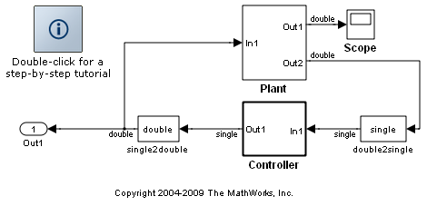
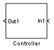
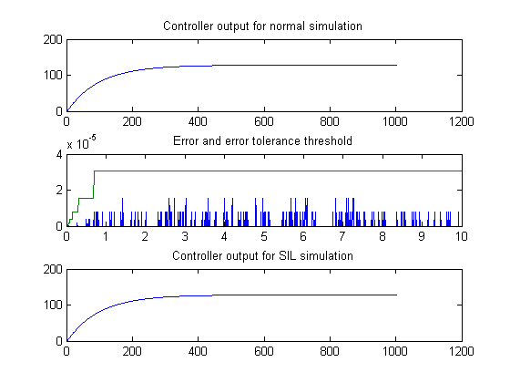
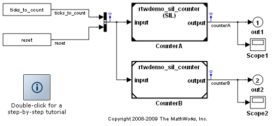
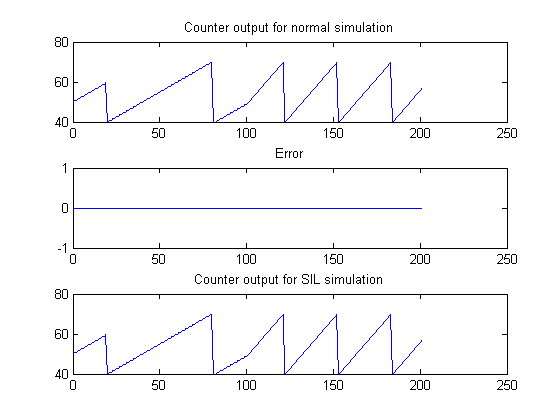
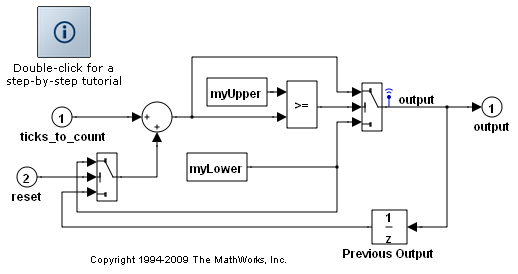
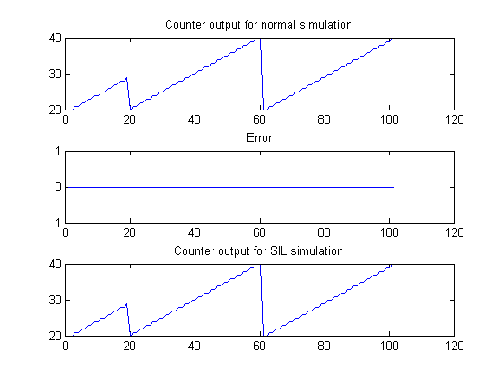

ソフトウェアインザループおよびプロセッサーインザループ (SIL および PIL) シミュレーション
SIL または PIL シミュレーション モードを使用して、自動的に生成されたコードを検証するには、ノーマル モード シミュレーションの場合の結果と比較し、コード カバレッジなどのメトリックスを収集します。SIL を使用すると、ホスト コンピューターで製品目的のソース コードの動作を簡単に検証できます。ただし、ホスト プラットフォームに対してコードをコンパイルしなければならないため (ターゲットとは異なるコンパイラとプロセッサー アーキテクチャ)、通常、ターゲット ハードウェアに対してその後にコンパイルされるコードと全く同じコードを検証することはできません。PIL シミュレーションを使用すると、製品に展開する予定のコードと全く同じコードを検証し、実際のターゲット ハードウェアまたは命令セット シミュレーターでコードを実行することができます。
このデモでは、ユーザーのニーズに適合する SIL または PIL 検証の各アプローチを選択する方法について説明します。この選択に役立つ、以下のタスクに関する質問に回答してください。
1. 生成されたコードを検証するモデル コンポーネントとコードインターフェイスはどれですか?
a) 最上位モデル (スタンドアロン コード インターフェイス)
b) サブシステム (右クリックのビルドとスタンドアロン コード インターフェイス)
c) 参照先モデル (モデル参照コード インターフェイス)
2. テスト時にコンポーネントに入力の入力パターンまたはテスト ベクトルをどのように適用しますか?
a) MATLAB ワークスペースまたは MATLAB スクリプトから入力パターン データをロードします。
b) テストハーネスモデル (またはシステムモデル) を使用して入力パターン データを生成します。
3. モデルに変更を加えずに通常、SIL または PIL の各シミュレーション モード間を迅速に切り替えることが重要ですか?
a) はい：メニュー選択肢から選択することによって入力パターン モードを簡単に切り替える必要があります。
b) いいえ：SIL または PIL モードで実行されているコンポーネントを表すために、モデルに変更を加えたり、特定のブロックを挿入することは許容されます。
4. ターゲット環境 (実ハードウェアまたは命令セット シミュレーター) で実行されるオブジェクト コードを検証する場合は、次のどのオプションがユーザーの状況に該当しますか?
a) MathWorks の Embedded IDE Link 製品は、コンパイラとターゲット環境をサポートしている。
b) ターゲット環境にサードパーティ製の市販の PIL コンフィギュレーションが存在する。
c) ドキュメント化された API を使用して、ターゲット環境をサポートする接続設定を実装する。
ユーザーの状況に適切なアプローチを決定するのに役立つ次の例で学習していきましょう。
rtwdemo_custom_pil、rtwdemo_rtiostream も参照してください。
目次
例 1: ソフトウェアインザループシミュレーションにおける SIL ブロック
この例では、自動的に生成された SIL ブロックを検証でどのように使用できるかについて示します。 このアプローチを使用すると、次のことが可能になります。
- 最上位モデルまたはサブシステム (スタンドアロン コード インターフェイス) に対して生成されたコードを検証できます。
- テスト ベクトルまたは入力パターンの入力を提供するには、テスト ハーネス モデル (またはシステム モデル) を指定しなければなりません。
- 自動的に生成された SIL ブロックを使用してオリジナルのサブシステムを交換しなければなりません。オリジナルのサブシステムが失われるため、この状態でモデルを保存するのは避けてください。
- このアプローチでは、ドキュメント化されたターゲット接続 API を使用できません。 結果として、実行できるのは、PIL ではなく SIL シミュレーションのみとなります。
以下の MATLAB コマンドを入力して、簡単なモデルを開きます。 モデルは、プラント モデルを使用して閉ループに接続された制御アルゴリズムから構成されます。 制御アルゴリズムは、プラントの出力を調整するように設計されています。
model='rtwdemo_sil_block'; close_system(model,0) open_system(model) out = sim(model,10); yout_normal = find(out,'yout'); clear out
ビルド プロセスを設定して検証用の SIL ブロックを作成します。 このモデルまたはそのサブシステムのコードのいずれかが生成されると、共有ライブラリにコンパイルされ、このライブラリを呼び出す SIL ブロック (Simulink の S-function ブロック) が自動的に作成されます。
set_param(model,'GenerateErtSFunction','on');
制御アルゴリズム サブシステムのコードを生成するには、以下のコマンドを実行します。代わりに、サブシステムを右クリックし、[Real-Time Workshop] から [サブシステムのビルド] を選択すると表示されるダイアログで [ビルド] をクリックして生成することもできます。 ビルドの最後に SIL ブロックが作成され、その入力/出力端子が制御アルゴリズム サブシステムの入力/出力端子と一致することに注意してください。
if ~isempty(find_system('type', 'block_diagram','Name','untitled')) error(['A model named untitled is already open. You must close this model '... 'and run the demo again.']); end rtwbuild([model '/Controller'])
### Starting Real-Time Workshop build procedure for model:Controller ### Successful completion of Real-Time Workshop build procedure for model:Controller
例 1:モデルのシミュレーション
プラント モデルの閉ループで構成されたコントローラーを使用して SIL シミュレーションを実行するには、新しい SIL ブロックを使用してオリジナルの制御アルゴリズムを置換しなければなりません。この置換を自動的に実行するには、以下のコマンドを実行します。
controllerBlock = [model '/Controller']; blockPosition = get_param(controllerBlock,'Position'); delete_block(controllerBlock); add_block('untitled/Controller',[controllerBlock '(SIL)'],... 'Position', blockPosition); close_system('untitled',0); clear controllerBlock blockPosition
SIL シミュレーションを実行し、すべての結果をプロットしてノーマル シミュレーションと比較します。ノーマル シミュレーションと SIL シミュレーションの結果は異なりましたか。制御アルゴリズムでは、単精度浮動小数点演算を使用します。単精度データのマシン精度の領域に度合い順に違いが表示されます。製品ハードウェアの正確な動作を検証する必要がある場合は、PIL シミュレーションを使用してください。
out = sim(model,10); yout_sil = find(out,'yout'); tout = find(out,'tout'); % Define an error tolerance based on machine precision for the normal simulation % result represented in single precision machine_precision = eps(single(yout_normal)); tolerance = 4 * machine_precision; fig1 = figure; subplot(3,1,1), plot(yout_normal), title('Controller output for normal simulation') subplot(3,1,2), plot(tout, [abs(yout_normal-yout_sil) tolerance]), ... title('Error and error tolerance threshold') subplot(3,1,3), plot(yout_sil), title('Controller output for SIL simulation');
例 1:クリーン アップ
close_system(model,0); if ishandle(fig1), close(fig1), end clear fig1 simResults={'out','yout_sil','yout_normal','tout','machine_precision'}; save([model '_results'],simResults{:}); clear(simResults{:},'simResults')
例 2:モデル ブロックにおける SIL または PIL シミュレーション
この例では、SIL シミュレーションを実行して、参照先モデルに対して自動的に生成されたコードを検証する方法について説明します。このアプローチを使用すると、次のことが可能になります。
- 参照先モデル (モデル参照コード インターフェイス) に対して生成されたコードを検証できます。
- テスト ベクトルまたは入力パターンの入力を提供するには、テスト ハーネス モデル (またはシステム モデル) を指定しなければなりません。
- SIL または PIL シミュレーション モード間のモデル ブロックを簡単に切り替えることができます。
- PIL シミュレーションを実行するには、ターゲット固有の接続性の設定を使用できるようにしなければなりません。接続性の設定を使用すると、PIL シミュレーションによって、ターゲット アプリケーションのビルド、実ハードウェアまたは命令セット シミュレーターへのダウンロード、シミュレーション時のアプリケーションの起動とアプリケーションとの通信が可能になります。このシミュレーション モードでの Embedded IDE Link サポートの詳細は、該当する製品のドキュメンテーションを参照してください。
以下の MATLAB コマンドを入力して、例のモデルを開きます。モデルには、同じ参照先モデルを参照する 2 つのモデル ブロックが含まれています。モデル ブロックの一方は、SIL シミュレーション モードで、もう一方はノーマル モードで実行するように設定されます。
model='rtwdemo_sil_modelblock';
open_system(model);
 例 2:モデルのシミュレーション
シミュレーションを実行して結果をプロットするには、以下のコマンドを実行します。モデル ブロックの片方は SIL モードで実行するように設定されているため、参照先モデルのコードが生成されるコマンド ウィンドウが表示されます (以前のビルドから生成されたコードが既に存在する場合を除く)。SIL モードで実行されるモデル ブロックは、コンピューター上で別個のプロセスとして実行されます。
out = sim(model,20);
### Model reference SIM target (rtwdemo_sil_counter_msf.mexw32) for model rtwdemo_sil_counter is out of date because rtwdemo_sil_counter_msf.mexw32 does not exist ### Updating model reference SIM target for model:rtwdemo_sil_counter ### Successfully updated the model reference SIM target for model:rtwdemo_sil_counter ### Model reference RTW target (rtwdemo_sil_counter.c) for model rtwdemo_sil_counter is out of date because rtwdemo_sil_counter.c does not exist ### Starting Real-Time Workshop build procedure for model:rtwdemo_sil_counter ### Successful completion of Real-Time Workshop build procedure for model:rtwdemo_sil_counter ### Preparing to start SIL simulation ... ### Starting SIL simulation for component:rtwdemo_sil_counter ### Stopping SIL simulation for component:rtwdemo_sil_counter
ノーマル シミュレーション モードと SIL シミュレーション モードで実行されるモデル ブロックの動作を比較するには、次のコマンドを実行します。この動作は完全に一致する必要があります。
yout = find(out,'logsOut'); yout_sil = yout.counterA.Data; yout_normal = yout.counterB.Data; fig1 = figure; subplot(3,1,1), plot(yout_normal), title('Counter output for normal simulation') subplot(3,1,2), plot(yout_normal-yout_sil), title('Error') subplot(3,1,3), plot(yout_sil), title('Counter output for SIL simulation');
例 2:クリーン アップ
close_system(model,0); if ishandle(fig1), close(fig1), end, clear fig1 simResults={'out','yout','yout_sil','yout_normal','SilCounterBus','T',... 'reset','ticks_to_count','Increment'}; save([model '_results'],simResults{:}); clear(simResults{:},'simResults')
例 3:最上位モデルにおける SIL または PIL シミュレーション
この例では、SIL または PIL シミュレーションを実行して、最上位モデルに対して自動的に生成されたコードを検証する方法について説明します。このアプローチを使用すると、次のことが可能になります。
- 最上位モデル (スタンドアロン コード インターフェイス) に対して生成されたコードを検証できます。
- MATLAB ワークスペースからテスト ベクトルまたは入力パターンの入力をロードするようにモデルを設定しなければなりません。
- SIL または PIL シミュレーション モード間のモデル全体を簡単に切り替えることができます。
- PIL シミュレーションを実行するには、ターゲット固有の接続性の設定を使用できるようにしなければなりません。接続性の設定を使用すると、PIL シミュレーションによって、ターゲット アプリケーションのビルド、実ハードウェアまたは命令セット シミュレーターへのダウンロード、シミュレーション時のアプリケーションの起動とアプリケーションとの通信が可能になります。このシミュレーション モードでの Embedded IDE Link サポートの詳細は、該当する製品のドキュメンテーションを参照してください。
以下の MATLAB コマンドを入力して、例のモデルを開きます。モデルは、簡単なカウンターです。
model='rtwdemo_sil_topmodel';
open_system(model)
 例 3:入力の入力パターン データの設定
[ticks_to_count, reset] = rtwdemo_sil_topmodel_data(T);
例 3:モデルでのログ オプションの設定
set_param(model, 'LoadExternalInput','on'); set_param(model, 'ExternalInput','ticks_to_count, reset'); set_param(model, 'SignalLogging', 'on'); set_param(model, 'SignalLoggingName', 'logsOut');
例 3:モデルのシミュレーション 最初にノーマル モードで実行してから SIL シミュレーションを実行し、結果を比較するには、以下のコマンドを入力します。
set_param(model,'SimulationMode','normal') out = sim(model,10); logsOut = find(out,'logsOut'); yout_normal = logsOut.output.Data;
このモデルのコードが既に存在し最新のものである場合を除き、SIL シミュレーションを実行します。新しいコードが生成されコンパイルされます。シミュレーションを実行すると、このコードは、ホスト コンピューター上で別個のプロセスとして実行されます。
set_param(model,'SimulationMode','Software-in-the-Loop (SIL)') out = sim(model,10); logsOut = find(out,'logsOut'); yout_sil = logsOut.output.Data;
### Starting Real-Time Workshop build procedure for model:rtwdemo_sil_topmodel ### Successful completion of Real-Time Workshop build procedure for model:rtwdemo_sil_topmodel ### Preparing to start SIL simulation ... ### Starting SIL simulation for component:rtwdemo_sil_topmodel ### Stopping SIL simulation for component:rtwdemo_sil_topmodel
プロットしてノーマル シミュレーションと SIL シミュレーションを比較するには、以下のコマンドを実行します。この動作は完全に一致する必要があります。
fig1 = figure; subplot(3,1,1), plot(yout_normal), title('Counter output for normal simulation') subplot(3,1,2), plot(yout_normal-yout_sil), title('Error') subplot(3,1,3), plot(yout_sil), title('Counter output for SIL simulation');
例 3:クリーン アップ
close_system(model,0); if ishandle(fig1), close(fig1), end, clear fig1 simResults = {'out','logsOut','yout_sil','yout_normal','model','T',... 'ticks_to_count','reset'}; save([model '_results'],simResults{:}); clear(simResults{:},'simResults')
SIL シミュレーションにおけるハードウェア実装の設定の詳細情報
SIL シミュレーションを実行するときは、ハードウェア実装設定 (ネイティブなワードサイズなど) を行ってホスト コンピューターでのコンパイルを可能にしなければなりません。つまり、設定は、製品ハードウェアのモデルをビルドする際に使用しなければならないハードウェア実装設定と異なる可能性があります。これにより、移植可能なワードサイズを有効にすることによって SIL と PIL シミュレーション間のハードウェア実装設定を変更する必要性がなくなります。このトピックの詳細は、rtwdemo_sil_hardware_config を参照してください。